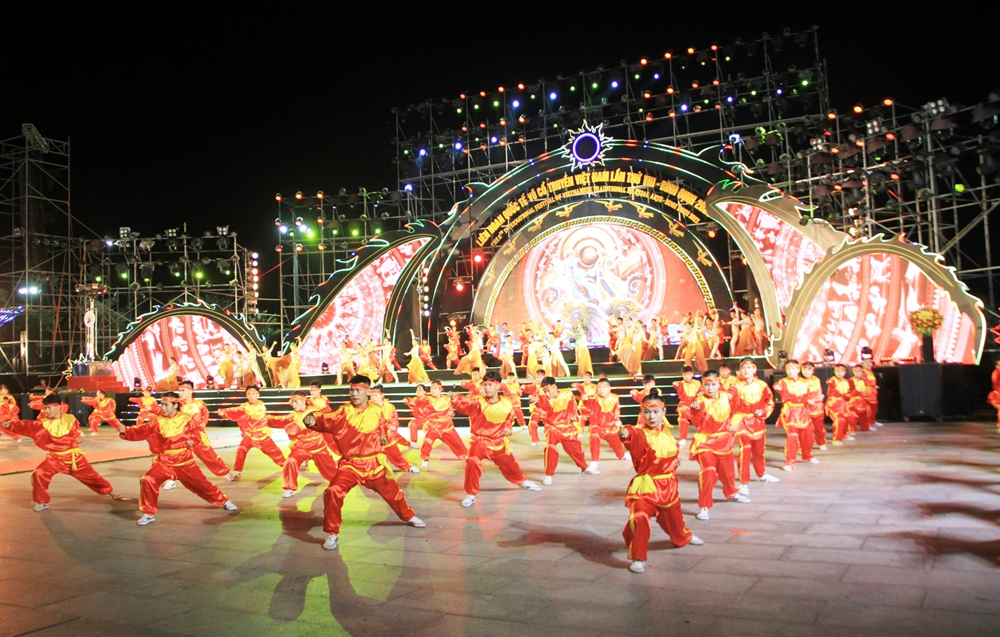
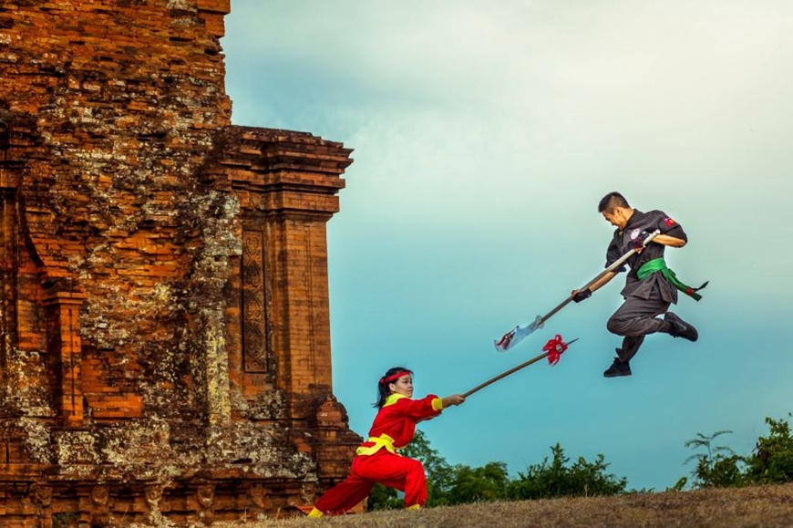
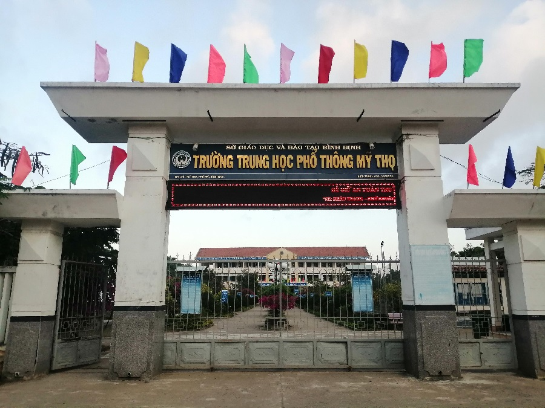
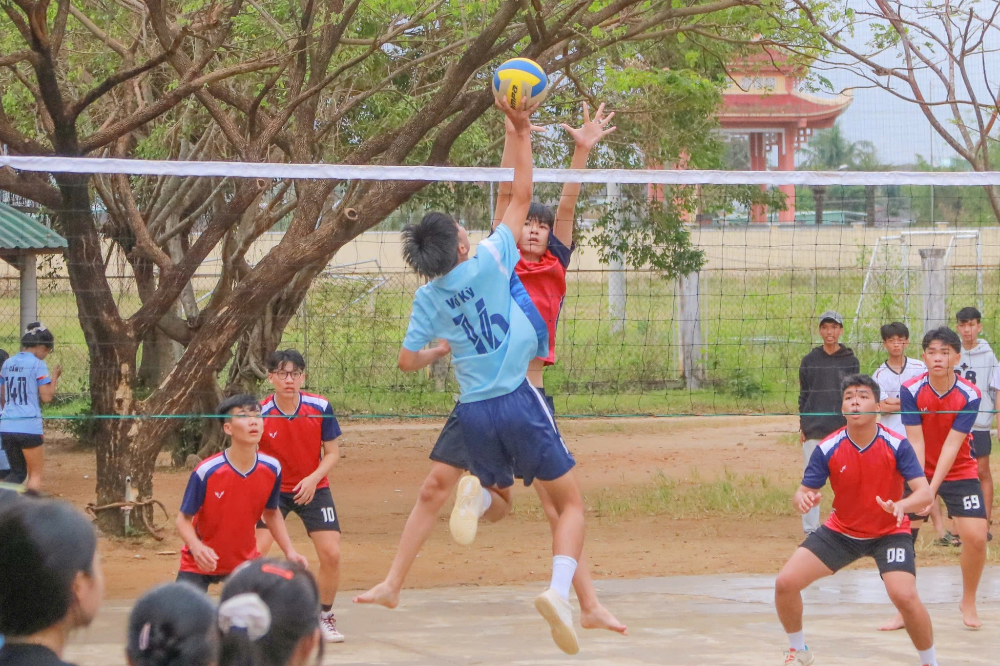

Bình Định từ lâu đã được biết đến là vùng đất giàu truyền thống, nơi hội tụ những giá trị tốt đẹp được hun đúc qua lịch sử lâu dài. Truyền thống ấy không chỉ thể hiện trong các cuộc đấu tranh dựng nước và giữ nước, mà còn in đậm trong đời sống, tính cách và tinh thần của con người Bình Định.
Trong suốt chiều dài lịch sử, người dân Bình Định luôn nêu cao tinh thần yêu nước và ý chí quật cường. Từ phong trào Tây Sơn vang dội với người anh hùng áo vải Quang Trung – Nguyễn Huệ, đến các cuộc kháng chiến chống thực dân, đế quốc, Bình Định luôn là địa bàn cách mạng quan trọng. Truyền thống yêu nước ấy đã trở thành động lực tinh thần to lớn, thôi thúc các thế hệ đứng lên bảo vệ quê hương, đất nước.
Nhắc đến Bình Định là nhắc đến võ cổ truyền, một nét văn hóa đặc trưng nổi tiếng trong và ngoài nước. Võ Bình Định không chỉ rèn luyện sức khỏe mà còn đề cao đạo đức, tinh thần kỷ luật và lòng nhân ái. Truyền thống thượng võ đã góp phần tạo nên tính cách cứng cỏi, ngay thẳng và nghĩa khí của con người nơi đây.
 Bên cạnh tinh thần thượng võ, người Bình Định còn nổi bật với truyền thống hiếu học và trọng tri thức. Qua nhiều thế hệ, mảnh đất này đã sản sinh ra nhiều nhân tài, trí thức, đóng góp quan trọng cho sự phát triển của quê hương và đất nước. Ngày nay, truyền thống hiếu học vẫn được gìn giữ và phát huy thông qua sự quan tâm đến giáo dục và đào tạo nguồn nhân lực.
 Người Bình Định nổi tiếng với tính cách chân chất, thẳng thắn và giàu nghĩa tình. Trong cuộc sống, họ luôn đề cao tinh thần đoàn kết, sẵn sàng giúp đỡ lẫn nhau, nhất là trong những lúc khó khăn. Truyền thống ấy đã tạo nên sức mạnh cộng đồng bền vững và là nền tảng cho sự phát triển của tỉnh.
Truyền thống của Bình Định là sự kết tinh hài hòa giữa lịch sử hào hùng, văn hóa đặc sắc và con người nghĩa tình, tạo nên bản sắc riêng không thể trộn lẫn của vùng đất “địa linh nhân kiệt”.